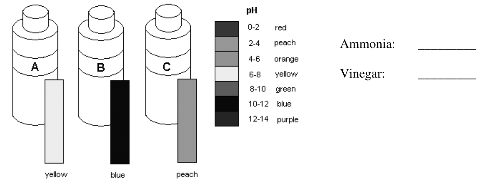

Chapter 3: Acids, Bases, and pH
Arrhenius acids and bases | Neutralization | Indicators | pH scale | Acid deposition | Homework traps
1. Core Concepts
Arrhenius Acids and Bases
Acid: produces H⁺ in water. Example: HCl + H₂O → H₃O⁺ + Cl⁻.
Base: produces OH⁻ in water. Example: NaOH → Na⁺ + OH⁻.
Acid and Base Properties
| Acids | Bases |
|---|---|
| Sour; blue litmus turns red | Bitter; red litmus turns blue |
| React with metals to form H₂ | Often found in cleaners and antacids |
| React with carbonates to form CO₂ | Neutralize acids |
Names to Memorize
| Formula | Name | Type |
|---|---|---|
| HCl(aq) | hydrochloric acid | acid |
| HBr(aq) | hydrobromic acid | acid |
| HI(aq) | hydroiodic acid | acid |
| HNO₃(aq) | nitric acid | acid |
| H₂SO₄(aq) | sulfuric acid | acid |
| H₃PO₄(aq) | phosphoric acid | acid |
| NaOH, KOH, LiOH | metal hydroxides | base |
| KHCO₃, Ca(HCO₃)₂ | hydrogen carbonates | base |
2. Neutralization and Acid Reactions
Neutralization
Acid + base → ionic salt + water.
HCl(aq) + LiOH(aq) → LiCl(aq) + H₂O(l)
Acids with Carbonates
Acid + carbonate → salt + carbon dioxide + water.
H₂SO₄ + CaCO₃ → CaSO₄ + CO₂ + H₂O
Neutralization Practice Answers
| Reaction | Balanced equation |
|---|---|
| HI + NaOH | HI + NaOH → NaI + H₂O |
| HBr + Ba(OH)₂ | 2HBr + Ba(OH)₂ → BaBr₂ + 2H₂O |
| H₃PO₄ + Ca(OH)₂ | 2H₃PO₄ + 3Ca(OH)₂ → Ca₃(PO₄)₂ + 6H₂O |
| HNO₃ + Al(OH)₃ | 3HNO₃ + Al(OH)₃ → Al(NO₃)₃ + 3H₂O |
| HCl + Mg(OH)₂ | 2HCl + Mg(OH)₂ → MgCl₂ + 2H₂O |
3. Indicators and pH
Indicators
| Indicator | Acid | Base |
|---|---|---|
| Phenolphthalein | colourless | pink |
| Litmus | red | blue |
| Bromothymol blue | yellow | blue |
pH Scale
pH < 7 acidic; pH = 7 neutral; pH > 7 basic.
The pH scale is logarithmic: a difference of 1 pH unit means a 10 times change.
Example: pH 2.3 to 6.7 is 10⁴⋅⁴ ≈ 25,000 times less acidic, so it became about 25,000 times more basic.
4. Acid Deposition and Applications
| Topic | What to remember |
|---|---|
| Natural rain | About pH 5.6 because dissolved CO₂ forms carbonic acid. |
| Acid deposition | Below pH 5.6; caused by sulfur oxides and nitrogen oxides from fossil fuels. |
| Effects | Damages plants, leaches soil minerals, harms aquatic life, and damages buildings. |
| Pool pH | Good range is about 7.2-7.8. If pH is 8.2, water is basic, cloudy, and chlorine works less well; add acid such as HCl to lower pH. |
Practice Test 1: Easy-to-Miss Questions
Try these first without looking at the answers.
- Classify each as acid, base, or neutral: HNO₃(aq), KOH(aq), KNO₃(aq).
- Name H₂SO₄(aq), HI(aq), and Ba(OH)₂(aq).
- What ions are produced by an Arrhenius acid and an Arrhenius base in water?
- Predict and balance: HI(aq) + NaOH(aq) →
- Predict and balance: HBr(aq) + Ba(OH)₂(aq) →
- Phenolphthalein is added to a basic solution. What colour should it be?
- Blue litmus is placed in hydrochloric acid. What happens?
- A solution has pH 3. Is it acidic, neutral, or basic?
- What gas forms when an acid reacts with a carbonate?
- Why is rainwater naturally slightly acidic?
Answers and analysis: Test 1
- HNO₃ is acid; KOH is base; KNO₃ is neutral.
Nitrates of Group 1 metals are salts and are usually neutral in this context. - Sulfuric acid; hydroiodic acid; barium hydroxide.
- Acids produce H⁺; bases produce OH⁻.
In water, H⁺ is often represented as H₃O⁺. - HI + NaOH → NaI + H₂O
Neutralization makes salt plus water. - 2HBr + Ba(OH)₂ → BaBr₂ + 2H₂O
Two OH groups need two H atoms from acid. - Pink.
- It turns red.
- Acidic.
- Carbon dioxide, CO₂.
- Dissolved CO₂ forms carbonic acid, H₂CO₃.
Practice Test 2: More Tricky Mixed Questions
- Predict and balance: H₃PO₄(aq) + Ca(OH)₂(aq) →
- Predict and balance: HNO₃(aq) + Al(OH)₃(s) →
- Write the balanced reaction for sulfuric acid with calcium carbonate.
- A pH changes from 2.3 to 6.7. About how many times more basic did it become?
- A lemon turns phenolphthalein from pink to colourless. Explain why.
- Universal indicator: A is yellow, B is blue, C is peach. Which is likely ammonia and which is likely vinegar?
- Would sugar water conduct electricity well? Explain.
- Why can lemon water reduce fishy seafood odour caused by amines?
- Pool water has pH 8.2. Is it acidic or basic, and how could you lower the pH?
- Why does a limestone lake resist acidification better than a granite lake?
Answers and analysis: Test 2
- 2H₃PO₄ + 3Ca(OH)₂ → Ca₃(PO₄)₂ + 6H₂O
Calcium is 2+ and phosphate is 3-, so the salt is Ca₃(PO₄)₂. - 3HNO₃ + Al(OH)₃ → Al(NO₃)₃ + 3H₂O
Aluminum is 3+, so three nitrate ions are needed. - H₂SO₄ + CaCO₃ → CaSO₄ + CO₂ + H₂O
Acid + carbonate produces salt, CO₂, and water. - About 25,000 times more basic.
The pH difference is 4.4, so the change is 10⁴⋅⁴. - Lemon juice is acidic, and phenolphthalein is colourless in acid.
- Ammonia is B; vinegar is A.
Blue indicates basic; yellow indicates acidic on the provided chart. - No, or very poorly.
Sugar dissolves as molecules, not ions. - Lemon water is acidic and neutralizes basic amines.
- Basic; add acid such as HCl/muriatic acid to lower pH.
- Limestone contains CaCO₃, which reacts with and neutralizes acid.
Homework-Specific High-Risk Points
Q1-Q2: Acid, Base, or Neutral
Acids: HNO₃, H₂SO₄, HI, H₃PO₄, HBr.
Bases: KOH, Ba(OH)₂, LiOH, KHCO₃, Ca(HCO₃)₂, Fe(OH)₃.
Neutral: KNO₃.
Q5: Universal Indicator Bottles

A is yellow, B is blue, C is peach.
Ammonia: B, because blue indicates a base.
Vinegar: A, because yellow indicates an acid near pH 6-8 on the provided chart.
Third bottle: C is not uniquely known; it is acidic, but many acidic cleaning fluids could give peach.
Other Homework Answers and Explanations
| Item | High-risk answer |
|---|---|
| Q3 | Stomach acid can erode tooth enamel, so repeated vomiting exposes teeth to acid. |
| Q4 | Lemon juice is acidic, so phenolphthalein becomes colourless instead of pink. |
| Q6 HCl | Blue litmus turns red; reacts with Mg to form bubbles of H₂; conducts electricity. |
| Q6 NaCl | Blue litmus stays blue; no reaction with Mg; conducts electricity because it is ionic in water. |
| Q6 sugar water | Blue litmus stays blue; no Mg reaction; poor/non-conductor because sugar does not form ions. |
| Q9 | Lemon water is acidic and neutralizes basic amines, reducing fishy odour. |
| Q10 | Acid + calcium carbonate releases CO₂; H₂SO₄ + CaCO₃ → CaSO₄ + CO₂ + H₂O. This weakens coral/shell structures. |
| Q12 | Limestone neutralizes acid because it contains CaCO₃; the limestone lake likely has higher pH and healthier aquatic life than the granite lake. |